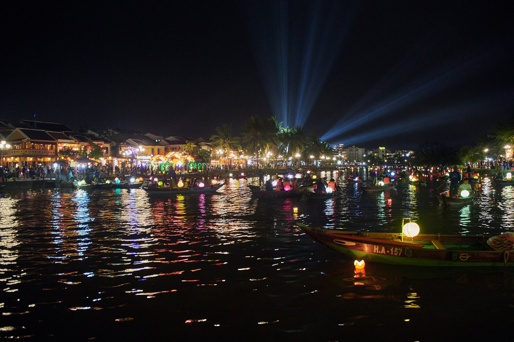

Tiếng Việt
Tiếng Việt English
English 한국어
한국어 中文
中文 Русский
Русский Deutsch
Deutsch
Путешествие с маленькими детьми всегда сопряжено с волнениями: выдержит ли ребёнок солнце, подойдёт ли еда, есть ли в отеле где поиграть? Хорошая новость: Хойан очень дружелюбен к детям. Город небольшой, жизнь течёт неспешно, много занятий на свежем воздухе, а еда понятная. В этой статье собран реальный опыт семей, отдыхавших в CGP Luxury Hotel, чтобы помочь вам подготовить отпуск, который понравится и родителям, и детям.
Почему Хойан подходит для семей?
Небольшие расстояния
Старый город, деревни и пляж находятся рядом. От CGP до Старого города около 1 км, до пляжа Ан Банг около 3 км. Детям не придётся долго ехать в машине.
Неспешный ритм
В Старом городе во многие часы ограничено движение транспорта, улицы узкие и безопаснее для семейных прогулок.
Много занятий на природе
Лодки-корзины, гончарное дело, работа на огороде, фонарики на реке, купание в море. Всё это очень нравится детям.
Понятная еда
Курица с рисом, бань ми, ми куанг и тропические фрукты легко нравятся детям, а острое можно убрать, если попросить заранее.
Когда ехать
Для семей с маленькими детьми погода – самый важный фактор. В Хойане два чётких сезона: сухой и дождливый.
| Период | Погода | Для семей |
|---|---|---|
| Февраль – апрель | Прохладно, мало дождей, мягкое солнце | Идеально, дети могут свободно играть на улице |
| Май – август | Жарко и солнечно, иногда выше 35°C | Подходит для летних каникул, гуляйте рано утром и ближе к вечеру |
| Сентябрь – декабрь | Сезон дождей, в октябре и ноябре возможны наводнения | Хорошо подумайте, планы должны быть гибкими |
| Декабрь – январь | Прохладно, морось | Приятно, если взять тёплые вещи |
Летние каникулыЕсли вы едете с июня по август, планируйте экскурсии на раннее утро и вечер. В полдень всей семьёй отдыхайте в отеле и купайтесь в бассейне, чтобы укрыться от солнца.
Выбор номера для всей семьи
Номер – «база» семьи на всю поездку, поэтому выбирайте внимательно. В CGP Luxury Hotel все номера площадью от 35 до 40 м², просторнее, чем во многих отелях района.
Deluxe Double 501: лучший выбор для семьи из трёх человек
В номере 501 одна двуспальная и одна односпальная кровать с тёплыми терракотовыми изголовьями. Стеклянная дверь ведёт на французский балкон, вдали зеленеют рисовые поля. Утром дети могут стоять на балконе и смотреть, как летают цапли и пасутся буйволы. Длинный шкаф, телевизор и чайный уголок обеспечат комфорт всей семье.


Номер с диваном-кроватью для больших семей
Номер 500 категории King Suite Balcony с кроватью King и большим диваном-кроватью подойдёт родителям с малышом, которому нужно отдельное спальное место. Большим семьям лучше забронировать два соседних номера. Укажите это при бронировании, и отель всё организует.
Номера на первом этаже у бассейна
Номера 101 и 102 выходят на деревянную террасу у бассейна, это очень удобно для семей с детьми, которые любят плавать. Но родителям нужно постоянно присматривать за детьми, ведь дверь ведёт прямо к бассейну.
Безопасность у бассейнаДети должны всегда находиться в бассейне в сопровождении взрослых. Возьмите нарукавники или спасательный жилет, если ребёнок ещё не умеет плавать.
Занятия, которые понравятся детям
Купание в отеле
Многие дети называют открытый бассейн CGP любимой «достопримечательностью» всей поездки. Бассейн с голубой плиткой расположен во внутреннем дворе, вокруг деревянный настил и плетёные шезлонги. Бассейн бесплатен для всех гостей.


Прогулка на лодке-корзине в лесу водяных пальм
Лес водяных кокосовых пальм Бай Мау в Камтхане – место, где дети смеются без остановки. Лодочники крутят корзины, ловят крабов и мастерят игрушки из пальмовых листьев для детей. Обязательно наденьте на детей спасательные жилеты.
 Фото: Chester Ho chesterho / Wikimedia Commons, CC0
Фото: Chester Ho chesterho / Wikimedia Commons, CC0
Гончарное дело в деревне Тханьха
Гончарной деревне Тханьха несколько сотен лет. Здесь дети могут сесть за гончарный круг и своими руками слепить из глины чашку или маленькое животное. Это значимый сувенир, сделанный самим ребёнком.
 Фото: LÊ TẤN LỘC / Wikimedia Commons, CC BY-SA 3.0
Фото: LÊ TẤN LỘC / Wikimedia Commons, CC BY-SA 3.0
Фермер на день в Чакуэ
В огородной деревне Чакуэ вся семья может вскопать грядку, посеять семена и полить их из традиционных двойных леек. А потом вместе приготовить простое блюдо из только что сорванной зелени. Городские дети обычно в восторге.
Фонарики на реке Хоай
Вечером вся семья может покататься на лодке по реке Хоай и отпустить бумажный фонарик. Мерцающие огни на обоих берегах наверняка приведут детей в восторг.

Фото: lumoplank / Wikimedia Commons, CC0Купание на пляже Ан Банг
Пляж Ан Банг находится примерно в 3 км от отеля, там мелкий песок и много кафе с зонтиками. Купайте детей в море до 10 утра или после 15 часов, когда солнце мягче.
Маршрут на 4 дня
Этот маршрут построен по режиму маленького ребёнка: утром прогулки, в полдень отдых, после обеда лёгкие занятия.
- День 1
Заселение и знакомство
Заселение с 14:00, купание в бассейне отеля, лёгкий ужин в ресторане CGP и ранний отход ко сну, чтобы набраться сил.
- День 2
Старый город и фонарики
Утром, пока прохладно, посетите Японский мост и старинные дома. В полдень вернитесь в отель отдохнуть. Вечером прогулка по Старому городу, фонарики и десерты.
- День 3
Лодки-корзины и пляж
Утром катание на лодке-корзине в лесу Бай Мау. Обед из морепродуктов. После обеда купание на пляже Ан Банг и закат в отеле.
- День 4
Гончарная деревня и выезд
Утром лепка из глины в Тханьха или работа на огороде в Чакуэ. Возвращение в отель, последнее купание и выезд до 12:00.
Если хотите, чтобы всё было подготовлено заранее, 4-ночный пакет Семейный отдых от CGP создан специально для всей семьи: проживание, ежедневный завтрак и другие преимущества, подробно описанные на странице пакета.
Список вещей для малышей
- Одежда: дышащая хлопковая одежда, панама с широкими полями, лёгкая куртка на вечер и дождевик в сезон дождей.
- Для плавания: купальник, очки, нарукавники или спасательный жилет для тех, кто не умеет плавать.
- Защита от солнца: детский солнцезащитный крем, солнечные очки.
- Аптечка: жаропонижающее, пробиотики, средство от комаров, пластыри.
- Привычные перекусы: немного печенья и молока, которые обычно ест ребёнок, на случай если новая еда не понравится.
- Маленькие игрушки: книжки с картинками и карандаши, чтобы занять малыша в ожидании еды или в машине.
Нужна дополнительная помощь?Если вам нужна детская кроватка или есть особые пожелания к питанию ребёнка, свяжитесь с ресепшен до поездки, чтобы отель всё проверил и подготовил.
Частые вопросы
Есть ли в отеле номер для семьи из трёх человек?
Да. В номере 501 категории Deluxe Double одна двуспальная и одна односпальная кровать, идеально для семьи с одним ребёнком.
Платный ли бассейн?
Нет. Открытый бассейн бесплатен для всех гостей. Дети должны быть в сопровождении взрослых.
Есть ли трансфер из аэропорта?
Да. Трансфер платный, пожалуйста, закажите его заранее на ресепшен, чтобы отель подобрал машину под количество гостей и багаж.
Что входит в пакет «Семейный отдых»?
В пакет входят 4 ночи проживания, ежедневный завтрак и другие преимущества. Подробности на странице пакета «Семейный отдых».
Идеальный семейный отдых в Хойане
Просторные номера, прохладный голубой бассейн и круглосуточный ресепшен, всегда готовый помочь всей семье провести счастливые дни.